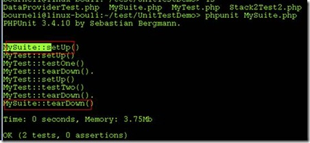
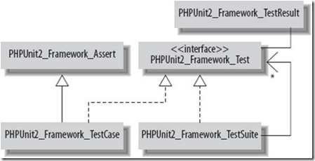

使用：
-
你的测试类需要继承TestCase类，实现测试方法。
-
在你的测试类中，测试方法命名为Test*__，其 将会被自动调用。注意不要重写runTest方法。
-
setUp和tearDown方法，在测试类/方法被调用前和调用后触发。
当你测试类中有比较大的资源时，比如sockets或者File相关，可以先在setUp方法里面初始化。
setUp和tearDown
setUp和tearDown可以帮助我们搭建和清理测试环境，TestCase和TestSuite两个类均有这对函数，可以共用户重载。但是，需要注意这两对函数调用的时机不一样，在TestCase中，每一次test***方法调用前均会调用setUp方法，调用后均会调用tearDown方法。但是，在TestSuite中，只会在第一个testCase调用之前调用setup，最后一个testCase调用后，调用tearDown。可以通过下面的例子，了解整个调用过程。

命名约定
PHPUnit中默认的命令规则，可以使得运行测试用例变得十分方便。列举如下：
-
自动执行每个TestCase类中test***形式的方法
-
自动执行目录下*Test.php形式命名中的用例
-
phpunit也可以默认的执行指定目录(需要指定目录)下*Test.php文件中的测试用例，并且是迭代的遍历所有子目录，
一旦遵守了这些命名约定，编写单元测试将会更加便捷。
框架结构
PHPUnit使用了组合模式：
使用Test作为统一的接口， TestCase是测试用用例，继承于Assert，这样可以方便的调用Assert中的各种断言函数。TestSuite，是一个Test的集合，他可以包含任意的TestCase或TestSuite。这样设计的好处不言而喻——方便的组织测试用例和测试套件，客户代码不必关执行的是单个测试用例还是一整套测试套件或是更为复杂的测试用例树。
参考：http://www.cnblogs.com/bourneli/archive/2012/04/27/2474005.html
TestSuite的组织：
1） 测试套件类集成与PHPUnit_Framework_TestSuite类；
2） 测试套件类必须实现public static function suite(){/*必须返回测试套件对象*/}接口；
3） 通过addTestSuite(‘Test Case Class Name’)，将具体的测试用例添加到测试套件中。
如果在真实的项目中，可以以模块为单位组织测试套件。如过模块过大，可以在模块内部继续划分测试套件，这样，形成一个树装结构，需要运行那部分测试用例，只需要敲入一行命令“phpunit XXXXTestSuite.php”,就可以轻松执行（上面的代码见附件）。合理的使用测试套件，可以简洁有效的组织所有测试用例。